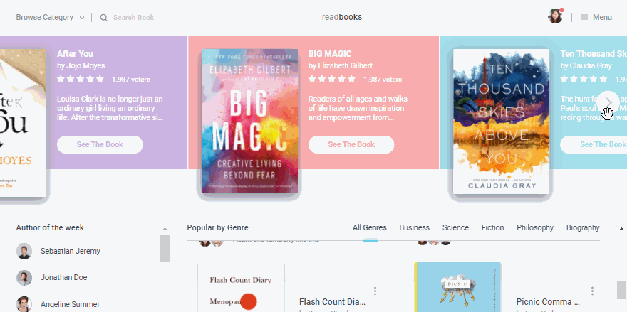
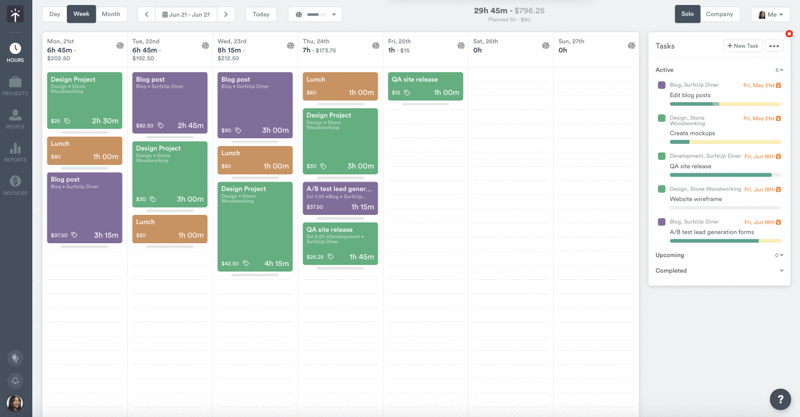
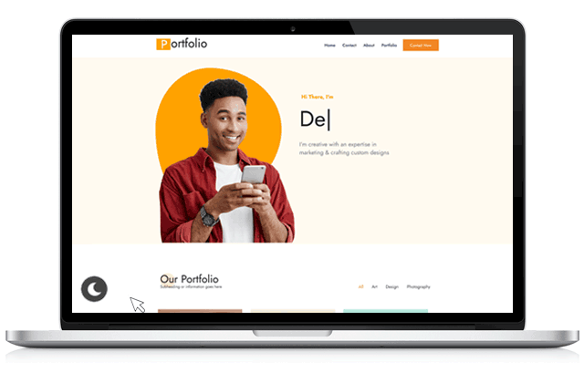

Online Bookstore Website
Description: Developed and launched a fully functional online bookstore website, providing a seamless shopping experience for book enthusiasts. Users can browse, search, and purchase books from a diverse collection.
Technologies used: HTML, CSS, JavaScript, PHP, MySQL, Bootstrap, Payment Gateway Integration, User Authentication, Content Management System (CMS), Responsive Design, Search Functionality, Security Measures.
Outcomes: I designed and implemented the website's user-friendly frontend, focusing on enhancing its visual appeal and usability to create an engaging experience for visitors. On the backend, I developed robust functionality using PHP and MySQL, ensuring efficient data management and secure transaction processing. To provide a seamless shopping experience, I integrated payment gateways, guaranteeing safe and convenient online payments for our users. Additionally, I implemented user authentication features, enabling account creation, login, and profile management with ease. To reach a broader audience, I ensured a responsive design that adapts to various devices, providing an optimal browsing experience. Moreover, I incorporated robust search functionality, simplifying book discovery for users. Security was a top priority, and I implemented stringent measures, including data validation and encryption, to safeguard user information. Lastly, I focused on scalability and performance optimization, ensuring the website could efficiently handle increased traffic demands.
Task Management Application (Java)
Description: Developed a comprehensive Task Management Application using Java to assist users in organizing and tracking their tasks efficiently. The application provides a user-friendly interface for creating, prioritizing, and managing tasks.
Technologies used: Java, JavaFX (for GUI), Task Tracking, Prioritization, Due Date Management.
Outcomes: I designed and implemented an intuitive user interface for the application using JavaFX, ensuring an engaging and easy-to-navigate experience for users. On the backend, I developed the application's logic in Java, focusing on tasks' creation, modification, and deletion, with a particular emphasis on task prioritization to enhance productivity. To help users stay organized and meet deadlines effectively, I seamlessly integrated due date management features. Additionally, I implemented task categorization, improving task visibility and organization within the application. To further enhance user experience, I incorporated a notification system to remind users of impending task deadlines, ensuring that they never missed important milestones. The application was meticulously designed to be user-friendly, boasting a responsive and visually appealing design. Robust error handling and data validation were also implemented to provide users with a smooth and error-free experience.
Personal Portfolio Website
Description: Designed and developed a Personal Portfolio Website to showcase my professional achievements, skills, and projects. This website serves as a digital representation of my work and capabilities.
Technologies Used: HTML, CSS, JavaScript, Responsive Design, Project Display, Contact Form.
Outcomes: I meticulously crafted the frontend of my Personal Portfolio Website using HTML, CSS, and JavaScript, aimed at delivering an engaging and visually captivating user experience. My portfolio was thoughtfully organized, showcasing my professional projects with detailed descriptions and visual elements that effectively demonstrated the breadth of my work. Additionally, I integrated a contact form to simplify communication with potential employers and collaborators, fostering effortless interaction. To ensure a seamless user experience, I made certain that the website was responsive across various devices and screen sizes, accommodating a wide range of visitors. Furthermore, I implemented a user-friendly navigation structure, allowing visitors to explore my portfolio effortlessly. To make my online presence truly unique and memorable, I tailored the design to reflect my personal brand and professional style. Lastly, I maintain the portfolio's relevance by consistently updating it with new projects and achievements, ensuring it remains a current and valuable representation of my skills and expertise.
 Facebook
Facebook LinkdIn
LinkdIn GitHub
GitHub.png) X(Twitter)
X(Twitter)